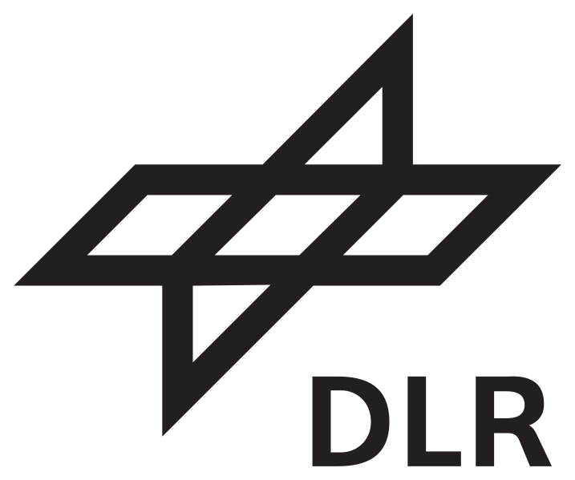

Growing up in Tuebingen - Igniting my creativity.
My parents originally came from the north-western part of germany. My father fell in love with Tuebingen when he was touring through the country,
finding a university to study biochemistry. My mother followed him to Tuebingen shortly afterwards. In retrospect I'm very thankful for that decision they made.
The local university is famous for it's wide spectrum of foreign students, and some of them had childs.
I soon had a lot of friends from all over the world. Kongo, Kamerun, China, Korea, Poland, Mexico, Italy and Syria, just to name some of the countries where my best friends came from. I had an extraordinary luck to grow up with so many different cultural influences. It had a huge impact on my early development. Especially on my creative skills.
Early years in Ulm.
We moved to a small suburb just outside of Ulm, close to the local university. I continued primary school until 1998 and attended middle school afterwards.
2005 - Apprentice Ship at REWE - bulk consumer service
After middle school I started an apprentice ship at a grocery wholesale as an management assistant in warehousing and logistics.
I become well acquainted with the world of trade, logistics and hard work. I visited all operational departments within the company. All trainees at REWE benefited from a special training beyond the basics of their prospective profession. In particular I want to mention the anual exhibitions, where I got to know a completely different working environment and also learned another set of skills which I would never had a chance to learn just inside the facility building. I finished in 2009 file_copy.
2009 - Valckenburg Highschool Ulm
But that world wasn't mine. I was convinced that I was able to achieve more. I visited high-school with a focus on econimcs. At the same time my interest in more intellectual topics began to grow.
I was more and more interested in Chess, Mathemathics, Physics and Astronomy. I have always been a big fan of Science Fiction too. I bought myself a big telescope and frequently watched the night sky with a couple of friends of mine.
I graduated Highschool file_copy in 2011.
Studying Aerospace Engineering in Aachen.
In 2011 I started studying Aerospace Engineering at the university of applied sciences in Aachen launch. Passing through the first semesters satisfied my appetite for knowledge on applied methods of physics and mathematics to solve engineering problems.
We also had courses teaching us programming and technical drawing. And during two semesters I also learned some chinese and spanish.
After the first 4 semesters most fundamentals were covered and more aerospace related topics were deepened. Students then had to choose a specialisation. I picked space-engineering.
We were introduced into basics of space flight dynamics, space vehicles, fundamental physics on environmental requirements for space vehicles and a lot more.
PDF showing all passed courses file_copy. We also had some courses lectured by a prominent guest lecturer.
NASA's Jesco von Puttkamer launch, who was also scientific advisor on the Star Trek TV-series.
Intership at the German Aerospace Center (DLR) .
At the end of the 6th semester all students of the faculty are required to do an Internship at a university, company or other organisation that offers projects for interns related to engineering.
The German Aerospace Center is obviously a very good place to gain practical experience, working on a long period project. I applied at the DLR's Institute of Space Propulsion launch in a forest close to the far-off town Lampoldshausen and shortly afterwards received an answer with an invitation.
I had to follow strict security guidelines. New rocket propulsion prototypes are being developed and tested on the site. I joined the system-analytics team of the rocket-propulsion division. I first had to learn Python in a couple of weeks. When I was well versed with programming in the new language I was given a more difficult task. With the help of my advisor Dr. Fromm I wrote a program to calculate rocket trajectories taking into account an atmosphere model, a spherical earth and therefore a changing gravitational field. The rocket itself was described with a more advanced time dependent rocket equation considering stearing engines, gravity and fluid dynamics.
Bachelor Thesis at the German Aerospace Center (DLR) .
On completion of the internship I was offered to work on a project for my bachelor thesis. With a demand for a more cost efficient rocket propulsion system,
the system-analytics team was given the task to do preliminary studies on a rocket engine using an expander-bleed cycle. With methan as the preferred choice for fuel. An expander-bleed cycle
is distinguished by the fact that the freezing fuel that is coming out of the tanks first is used to drive a turbo-pump, after cooling chamber and nozzle, before it enters the chamber. Soaking up the heat from the engine wall also has the
benefit that the fuel already has a higher temperature and thus needs less energy to ignite and drive the turbo-pump. A small portion of the fuel won't enter the chamber though and is released from the cycle.
Mainly because of a higher massflow demand for cooling than is actually needed for the chamber and pump. The most sophisticated part was to accurately describe the heat-flux from the hot propellant to the chamber and nozzle wall.
NASA's CEA program launch gives good approximations for temperatures and chemical components. Furthermore advanved equations (Bartz) for convective and radiative heat tranfser from the boundary layer to the wall were formed into numerical algorithms. The result is a temperature distribution along the wall. Changing the boundary conditions would lead to different temperatures. The goal was to reach temperatures in a safe scope below the melting temperature of the wall's material.
Modding in Starcraft II  .
.
During the internship and bachelor thesis I fell sick with cancer. I got off lightly.
With 2 major operations and one irradiation afterwards. The cancer was cured with a 98% probability. I'm still doing regular checks. I had 2 big breaks from studies each lasting a few months.
During that time I started questioning everything. I only wanted to do things that distract me as much as possible from the whole desease. One very effective way was to start modding video games. Especially the Star Craft 2 engine editor was providing a wide set of tools to create my own worlds. Luckily I brought some good programming skills with me I acquired during the last couple years. I spent the whole day working on my own arcade projects. I made a card game ala Hearthstone or Magic the Gathering Arena but with the big difference that players would actually control their units. Another fun game I made is a top down space shooter with twin stick controls. After a while I realized that I'm actually really good at it and that I enjoy it a lot and that there might be more to it then just being a simple distraction. There are more infos about my projects in the portfolio launch section.